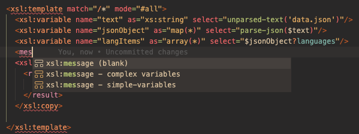
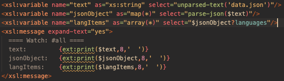
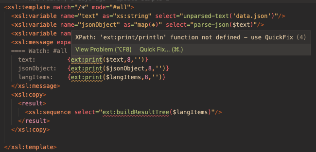
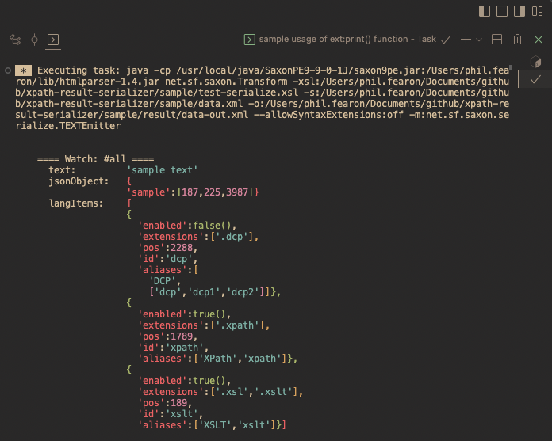

Debugging
There is no step-through debugger in the XSLT/XPath extesnion. When debugging XSLT, the xsl:message instruction can be used to send output to the terminal window. Another popular approach is to add XSLT instructions that insert diagnostics information directly into the result document.
Diagnosing state of in-scope XSLT variables
There is special provision for conveniently reviewing the state of in-scope XSLT variables. This approach is outlined here.
1. Use Auto-complete for xsl:message
To assist with debugging, the XSLT editor has special auto-completion for the xsl:message instruction:

2. Review Inserted xsl:message
When complex variables is selected from the auto-complete list, an xsl:message snippet will be inserted at the cursor with all the in-scope variables listed. A title is automativally inserted into the xsl:message block. This corresponds to the name or mode of the parent instruction, such as the name of an enclosing xsl:function or the mode of an xsl:template.

3. QuickFix imported library function
As can be seen in the image above the library XPath function ext:print() is included within a
Text Value Template (TVT) adjacent to each variable that is added in the current scope.
When inserted for the first time, the inserted functions will be marked as 'problems'. Hover over the
problem function and accept the 'QuickFix' by pressing Enter.
The QuickFix will insert a namespace declaration for the 'ext' prefix along with an xsl:include instruction to import the XSLT library where this function is defined. The href attribute for the instruction is set to the path of the xpath-result-serializer.xsl library module. If the library module is found in the workspace folder then this file path will be used, otherwise it is set to reference the library module installed with this extension.

4. Run XSLT and Review State in Terminal
You can now run the XSLT as normal, but you will now see the xsl:message output in the terminal window for each variable. Each type is serialized in a form optimised for diagnostics. If using a version of Saxon prior to v0.9.0.2 the output will be colorised also:
